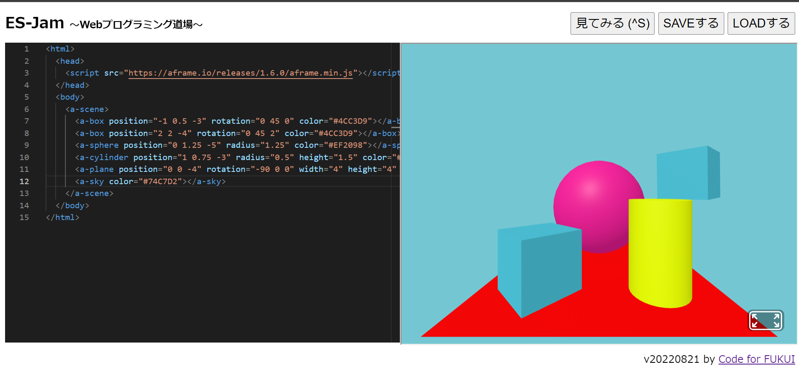
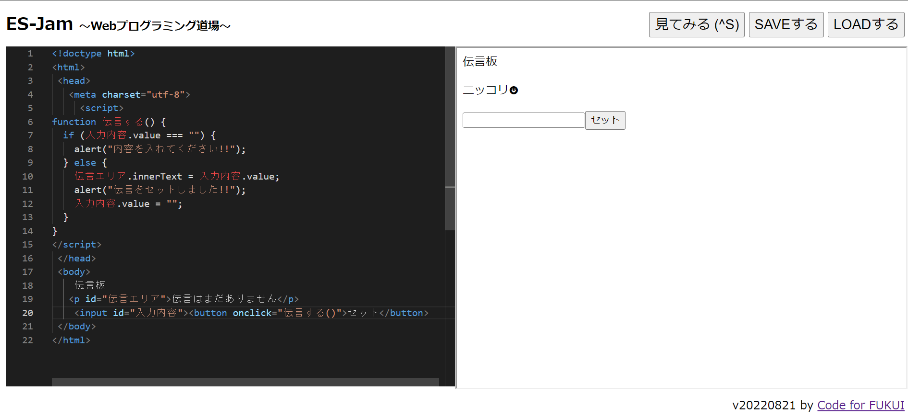

第3週目
3-1 JavaScript体験：VR空間を作る
VR空間
1.内容
Javasprictを使って、球や立方体を立体的に表示させ、それらの色や形、座標を変化させた。2.感想
意外と簡単で、とても楽しかったように思う。写真にはのせていないが、とても長くしたり、平べったくしたりすることができた。
3-2 JavaScript体験：伝言プログラムを作る
伝言板
1.内容
同じく、Javasprictを使って、伝言板のHPのようなものを作った。2.感想
自分で、伝言板を作ることができ、新しい知識になった。3-3 JavaScriptプログラムの３次元空間の体験
1.内容
VRゴーグルを使用して、3-1のものの中を移動しているような体験。実際に位置を移動したり、物体の位置を移動させたり、ピンポンボールのようなものを発射させたりした。